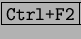
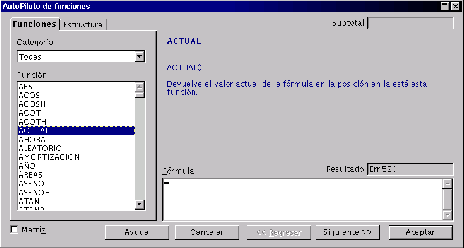

Next: Fechas y horas.
Up: Análisis de Datos
Previous: Análisis de Datos
Índice General
Sintaxis de las funciones: Las funciones presentas dos partes
diferenciadas, por un lado, el nombre de la función, por el otro, sus
argumentos. Los argumentos de una función deben estar entre paréntesis
inmediatamente después del nombre de la función y su cantidad
dependerá del tipo de función que se use. También hay que destacar el
hecho que dentro de los argumentos se pueden incluir tanto otras
funciones, con sus propios argumentos, como valores numéricos, valores
de texto o valores lógicos, así como matrices y valores de error. La
forma más sencilla de insertar funciones es usándo el autopiloto de
funciones que se encuentra en el menú [Insertar], [Función],
o presionando las teclas  o usando el botón que se
encuentra en las barras de botones, dónde se introducen las fórmulas.
Aquí no se van a exponer todas las funciones que existen e la
StarCalc, para ver todas las funciones que la hoja puede ofrecer puede
consultar el Autopiloto de Funciones, allí las encontrará agrupadas
según el uso que se les quiera dar. Ver figura ![[*]](crossref.png) .
.
Figura 5.33:
Autopiloto de funciones.
|

|
Next: Fechas y horas.
Up: Análisis de Datos
Previous: Análisis de Datos
Índice General
Proyecto Cursos - LuCAS - http://lucas.hispalinux.es/htmls/cursos.html